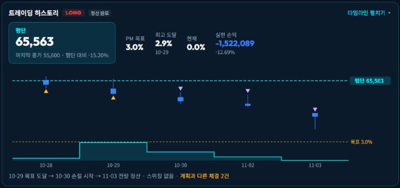
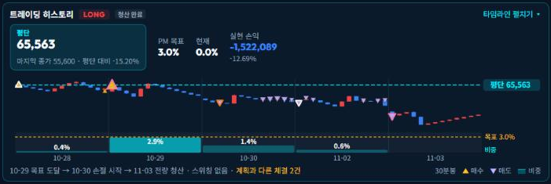
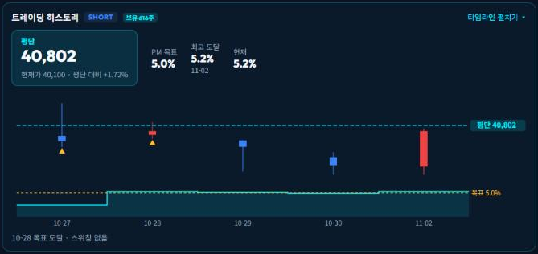
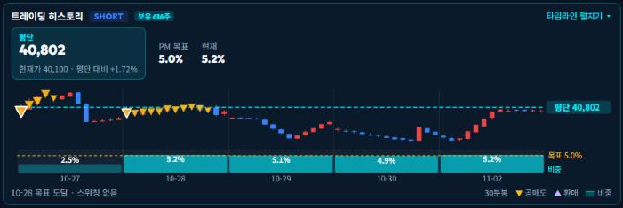
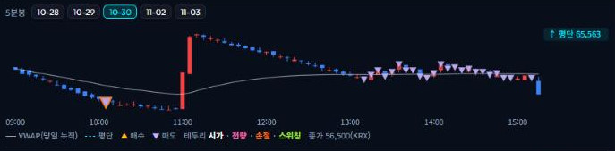

변경 전 = 운영 배포본 87f20bb2(11-03 11:22) · 변경 후 = 로컬 작업본(미커밋) · 판단 원문 팝업의 PM 요약 아래 카드





| 항목 | 변경 전 | 변경 후 |
|---|---|---|
| 카드 크기 | 396px | 280px(약 2/3) — 차트 높이·평단 숫자·여백 축소 |
| 주가 봉 | 일봉만 | 회차 전 기간에 틱이 있으면 보유 일수별 분봉(아래 표), 아니면 일봉 |
| 체결 표시 | 날짜별 화살표 1개 | 봉마다 세모 — 방향 = 실제 매매(▲매수·환매 / ▼매도·공매도), 색 = 진입·추가 / 청산·축소, 크기 = 수량, 테두리 = 시가·전량·손절·스위칭, 마우스 = 횟수·수량·평균가·시각 |
| 비중 | 계단 선(봉·목표선과 겹침) | 주가 아래 막대 띠(같은 날짜 축) + 날짜별 값, 목표 95%↑ 날 진하게, 목표선은 띠 안에만 |
| 공매도 화살표 | 공매도 진입도 ▲ | ▼(실제 매매 방향) |
| 최고 도달 | 비중 최고치·날짜 칸 | 제거 — 날짜별 비중 막대·값으로 확인 |
| 범례 | 없음 | 카드 오른쪽 아래 — 30분봉 · ▲매수 ▼매도 · 비중 |
| 타임라인 | 표만 | 위에 날짜 버튼 → 그날 5분봉 + VWAP + 체결(누를 때 조회) |
| 보유 일수 | 카드 분봉 | 미리보기 예 |
|---|---|---|
| 1일 | 5분 | 한국전력 015760 |
| 2일 | 10분 | SK증권 001510 |
| 3~4일 | 15분 | — |
| 5~9일 | 30분 | 삼아알미늄 · 코오롱인더 |
| 10~17일 | 60분 | 셀트리온 068270 |
| 18일↑ / 틱 없는 날 포함 | 일봉(화살표) | 10-19 이전 진입 회차 · 날짜별 5분봉은 틱 있는 날만 |
intraday/<날짜>/ticks/<종목>(15초 틱)을 묶음/api/swing/history?key=에 step·ibars·fills·tickDays 추가, &day=로 그날 5분봉(dayView)swing/history.py 분봉 집계·간격 선택·체결 수집 · swing/server.py day 인자swing/static/app.js 공용 봉차트·카드·5분봉 · style.css 범례·버튼tests/test_history.py 7건 추가 → 전체 326건 통과